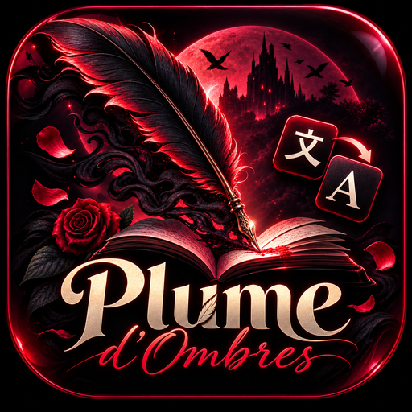

✦ Dossier de lancement ✦
Importer un roman en anglais, le traduire en français
dans une langue qui garde la morsure du texte.
Plume d’Ombres est un atelier de traduction littéraire en ligne : on y dépose un roman en anglais, l’atelier le découpe en chapitres, le traduit en français et le rend dans un lecteur confortable — exportable en Markdown, Word ou PDF.
L’outil ne vise pas la traduction juridique ou technique. Il vise un seul public, exigeant : les lectrices et lecteurs francophones de dark romance et de romance, qui trouvent les livres en anglais, qui savent lire en anglais, mais qui veulent vivre l’histoire dans leur langue — sans perdre la tension, les dialogues et le rythme.
La dark romance est un genre massivement anglophone. Les lectrices francophones voulues par le genre se heurtent à trois murs :
Lire 400 pages en anglais quand on lit pour l’émotion, pas pour la performance : le rythme se perd, les sous-entendus passent à côté.
Copier-coller paragraphe par paragraphe dans un traducteur en ligne : la mise en page est détruite, les noms propres changent au milieu du livre, la lecture devient un travail.
Les services existants sont pensés pour l’Occident : carte bancaire obligatoire, abonnements en euros, aucune traduction littéraire.
Le livre entier entre d’un bloc. Chaque paragraphe entier devient une unité de traduction — pas une phrase, pas une ligne : un paragraphe, avec son contexte, ses dialogues, ses ruptures. Le texte traduit est ensuite réassemblé dans la structure d’origine, ligne pour ligne. Le lecteur n’a plus qu’à lire.
| Ce que le lecteur veut | Un traducteur en ligne classique | Plume d’Ombres |
|---|---|---|
| Traduire un livre entier | Copier-coller morceau par morceau | Import d’un fichier, le livre entier est traité |
| Garder la mise en page | Perdue | Assemblage 1:1 vérifié |
| Reprendre si ça casse | On recommence | Progression enregistrée, reprise automatique |
| Lire confortablement | Rien | Lecteur réglable, 18 palettes, favoris, recherche |
| Payer depuis le Bénin | Carte bancaire | Mobile Money en francs CFA |
18-34 ans. Lit 2 à 6 romans par mois, souvent en anglais par obligation. Très active sur TikTok et Instagram (BookTok, #darkromance). Achète par Mobile Money. Elle ne veut pas « un outil » : elle veut lire ce soir. Ce qu’elle déteste : les traductions qui font perdre la tension, les interfaces compliquées, les abonnements en euros.
Elle traduit des extraits pour ses cours et son mémoire. Elle a besoin d’exporter en Markdown ou Word pour citer et annoter. Le tarif étudiant à 1 200 F est fait pour elle.
Un groupe WhatsApp ou Discord de 5 à 30 personnes qui veut lire le même roman en français. Un seul payeur, 2 400 F par personne, glossaire partagé pour que les prénoms et les surnoms restent cohérents d’un tome à l’autre.
11 personnes minimum, 1 800 F par personne et par mois facturés à l’année. Le professeur vérifie la traduction, les élèves exportent en Word.
C’est ce rituel qu’il faut filmer. Chaque étape est courte, visuelle, et se raconte en une phrase.
Le lecteur dépose son fichier (.txt, .md, .pdf texte ou .epub) dans la zone d’import par glisser-déposer. Les chapitres sont détectés automatiquement (Chapter, Chapitre, Prologue, numérotation). Aucune découpe manuelle, aucun copier-coller.
Le livre est vérifié et rangé : chapitres, paragraphes, nombre de caractères. L’écran annonce le coût avant de lancer : « 1 842 segments · 96 400 caractères à traduire ». Le lecteur sait exactement ce qu’il consomme.
Le moteur travaille paragraphe par paragraphe, garde la file, réessaie en cas d’échec, et continue même si le lecteur ferme son onglet. La progression est visible : segments faits, restants, pourcentage, état chapitre par chapitre. Un livre peut être laissé à traduire la nuit et être prêt au matin.
Le livre s’ouvre dans le lecteur : sommaire, recherche dans le chapitre et dans tout le livre, favoris, reprise de lecture. Puis export : Markdown du chapitre, Markdown du livre entier, Word, impression PDF, PDF re-paginé, PDF fidèle à la source.
| Écran | Ce qu’on y voit | Usage vidéo |
|---|---|---|
| Accueil | Le titre, la promesse, l’entrée vers l’import | Plan d’ouverture, 2 s |
| Bibliothèque | La grille des livres importés, leur état | Preuve « je gère plusieurs livres » |
| Espace livre | Chapitres, progression, boutons de traduction | Preuve « ça travaille tout seul » |
| Lecteur | Le texte traduit, réglages, sommaire | Plan final, le plus important |
| Abonnement | Quota, solde, historique de paiement | Preuve « je vois ce que j’ai payé » |
| Tarifs | Les formules et les prix en francs CFA | Fin de vidéo, appel à l’action |
| Section | Contenu |
|---|---|
| Vue d’ensemble | Chiffres clés : comptes, abonnements actifs, revenus, paiements récents, alertes. |
| Comptes | Liste paginée, recherche, rôle, statut, dernière connexion, actions encadrées par confirmation. |
| Abonnements | Répartition par formule, anomalies détectées (quota dépassé, période incohérente). |
| Paiements | Journal des transactions : montant, formule, statut, référence, moyen de paiement. |
| Rôles | Attribution et retrait des droits administratifs, avec garde-fous. |
| Système | Santé des moteurs de traduction, ordre de la chaîne, exports, journal des actions. |
Prix en francs CFA (XOF), payables par Mobile Money. La grille ci-dessous est celle du catalogue en vigueur, engagée par les conditions générales.
| Formule | Prix | Ce qu’elle donne |
|---|---|---|
| Gratuit | 0 F | 400 000 caractères par mois (≈ un livre) · import tous formats · lecture complète · favoris, recherche, exports |
| Essai — 7 jours | 0 F | Le confort du plan Passionné pendant 7 jours, plafonné à 3 livres |
| Lecteur — mensuel | 1 500 F | 3 livres par mois · confort de lecture complet · exports |
| Lecteur — annuel | 14 400 F | Les mêmes droits à l’année, soit 1 200 F/mois (−20 %) |
| Passionné — mensuel | 3 500 F | 10 livres par mois · 2 traductions en parallèle · file prioritaire · glossaire de personnages |
| Passionné — annuel | 33 600 F | Les mêmes droits à l’année, soit 2 800 F/mois (−20 %) |
| Illimité — mensuel | 9 000 F | Volume illimité sous usage raisonnable (jusqu’à 25 000 000 caractères/mois) · 3 traductions en parallèle |
| Illimité — annuel | 90 000 F | Les mêmes droits à l’année, soit 7 500 F/mois |
| Étudiant — mensuel | 1 200 F | 3 livres par mois · justificatif de statut demandé |
| Groupe — mensuel | 2 400 F / pers. | 3 personnes minimum, un seul payeur · 3 livres/mois par personne · glossaire partagé |
| École — annuel | 21 600 F / pers. | 11 personnes minimum · 10 livres/mois par personne · facturé à l’année |
| Pack | Prix | Crédits | Équivalent |
|---|---|---|---|
| Découverte | 500 F | 250 000 caractères | Une novella |
| Lecteur | 1 000 F | 600 000 caractères | Un roman complet |
| Bibliothèque | 2 500 F | 1 800 000 caractères | Trois romans |
| Collection | 5 000 F | 4 000 000 caractères | Une saga |
Cette page sert à rassurer les partenaires, pas à nourrir la communication : le client n’a pas besoin de savoir comment c’est construit.
| Brique | Choix | Pourquoi |
|---|---|---|
| Application | Next.js 16 (App Router), TypeScript, Tailwind CSS 4 | Rendu serveur rapide, pages publiques indexables, une seule base de code |
| Données | PostgreSQL managé (Supabase) avec règles d’accès par ligne | Chaque compte est isolé dans la base elle-même, pas seulement dans l’interface |
| Authentification | Email + mot de passe, liens signés, réinitialisation | Simple pour le public visé, sans dépendance à un réseau social |
| Hébergement | Vercel (offre gratuite) + un moteur auto-hébergé | Coût quasi nul tant que le volume reste maîtrisé |
| Paiement | FedaPay (Mobile Money), webhook signé, activation idempotente | Encaisse en francs CFA sans carte bancaire |
| Qualité | Plus de 120 tests automatisés, typage strict, analyse statique | Les règles critiques (assemblage 1:1, activation de paiement, reprise) sont prouvées à chaque modification |
1. Le découpage. Le programme ne coupe pas au hasard : le paragraphe entier est l’unité, et l’éclatement ne se fait qu’en phrases complètes, au-delà d’une taille limite. C’est ce qui donne au moteur assez de contexte pour traduire correctement.
2. L’assemblage. Chaque saut de ligne du fichier d’origine est conservé à part. Le texte traduit revient donc exactement dans la même structure, ce qu’aucun copier-coller ne permet.
3. L’enchaînement. Le serveur reprend le travail là où il s’est arrêté, tout seul, et ne s’arrête que quand le livre est fini — ou quand quelque chose ne va vraiment plus, auquel cas il prévient plutôt que de tourner à vide.
Tout ce qui sera produit (images, vidéos, stories) doit sortir de cette palette et de cette typographie. C’est ce qui rendra les publications reconnaissables avant même de lire le nom.
Douze visuels suffisent pour couvrir tout le lancement. Pour chacun : format, sujet, texte exact, usage.
1080×1080 · PNG transparent Le logo existant, sur fond nuit. Variante carrée pour l’icône d’application, variante horizontale pour l’en-tête. Usage : profil Instagram, TikTok, WhatsApp Business, favicon.
1500×500 Fond nuit avec brume grenat à gauche, logo à droite. Texte : « Traduire la nuit, chapitre par chapitre ». Usage : bannière Instagram et TikTok.
1080×1350 Fond nuit, une plume unique en or rosé, gros titre Bodoni : « Ce livre, tu vas le lire en français. » Sous-titre Literata : « Importe-le. On s’occupe du reste. » Usage : premier post, épingle du profil.
1080×1350 ×4 Une carte par étape, même gabarit : chiffre romain en filigrane, un titre court, une ligne d’explication. I · Importer — II · Découper — III · Traduire — IV · Lire. Usage : carrousel Instagram, fil LinkedIn.
1080×1350 Capture nette du lecteur, texte traduit visible, cadre fin grenat, légende : « 18 palettes. Ta police. Ta lumière. » Usage : post + story « swipe up ».
1080×1350 Capture de l’écran de progression, avec la ligne de statut. Légende : « Ferme l’onglet. On continue. » Usage : post technique-grand-public, très différenciant.
1080×1350 Quatre blocs : Gratuit 0 F · Lecteur 1 500 F · Passionné 3 500 F · Illimité 9 000 F, avec le nombre de livres. Bas de visuel : « Mobile Money · francs CFA · sans carte bancaire ». Usage : post enregistrable, story à la demande.
1080×1080 Un livre fermé, une pièce de 500 F stylisée en or rosé. Texte : « 500 F. Un livre. Ce soir. » Usage : post de conversion, publicité légère.
1080×1080 Quatre silhouettes de fichiers (.txt .md .pdf .epub) alignées, dans la palette. Texte : « Ton fichier, tel quel. » Usage : réponse aux questions fréquentes.
1080×1080 Trois feuilles qui s’empilent : Markdown, Word, PDF. Texte : « Emporte-le avec toi. » Usage : public étudiant et club de lecture.
1080×1350 Citation en Cormorant, guillemets immenses en filigrane, prénom + type de lectrice en bas. Gabarit à dupliquer pour chaque retour client réel — jamais de faux témoignage.
1080×1920 (story) Fond nuit, logo centré, une ligne : « Ton premier livre est offert. 400 000 caractères par mois. » puis l’adresse du site. Usage : dernière story de chaque série.
Une vidéo manifeste (45 s) pour le site et YouTube, trois verticales courtes pour TikTok et Reels, une démonstration de 90 s pour les curieux. Toutes suivent la même règle : on montre l’écran, on ne le raconte pas.
Image : noir presque total, une fumée grenat qui monte, une plume qui tombe lentement.
Texte à l’écran : « Tu l’as trouvé en anglais. »
Son : nappe grave, pas de musique rythmée.
Image : un livre anglais ouvert, la page se floute sur les mots difficiles ; la souris copie un paragraphe, le colle, la mise en page explose.
Texte : « Et tu as arrêté au chapitre 3. »
Image : capture nette. Le fichier est glissé dans la zone d’import ; les chapitres apparaissent un par un.
Texte : « Ton fichier. Entier. »
Détail à soigner : le curseur qui soulève le fichier, la zone qui s’illumine en grenat.
Image : l’écran de progression ; la barre avance, le pourcentage monte, les chapitres passent en vert.
Texte : « Tu peux fermer l’onglet. »
Note : accélérer légèrement l’image (×1,5) pour donner le sentiment de fluidité.
Image : le lecteur s’ouvre sur une page traduite. On change la palette (nuit → parchemin), la police grossit.
Texte : « En français. Dans ta lumière. »
Point clé : c’est le plan le plus important de la vidéo — il doit être lisible, net, sans reflet.
Image : la page Tarifs, puis un paiement Mobile Money qui se valide, puis l’historique avec la ligne « Réussi ».
Texte : « 500 F. Mobile Money. Sans carte. »
Image : retour au noir, le logo apparaît en fondu, le liséré grenat se trace.
Texte : « Plume d’Ombres — traduire la nuit, chapitre par chapitre. » puis l’adresse du site.
Son : la nappe se coupe net sur le logo.
0-3 s : face caméra ou texte plein écran : « J’ai arrêté 12 romans anglais au chapitre 3. »
3-8 s : capture de l’import du fichier, accélérée.
8-13 s : l’écran de progression, puis on ferme l’onglet visiblement.
13-18 s : on rouvre : la traduction est finie, le lecteur s’affiche. Texte : « Plume d’Ombres · lien en bio ».
Comparaison côte à côte : à gauche un paragraphe traduit à la va-vite qui a perdu le rythme, à droite la traduction sortie de Plume d’Ombres avec sa mise en page. Commentaire à l’écran : « Même paragraphe. Pas le même livre. » Fin sur l’offre gratuite.
Plan unique, très sobre : le téléphone qui affiche le paiement Mobile Money à 500 F, puis le lecteur. Texte plein écran : « Un livre. 500 F. Sans carte bancaire. » Aucune voix, uniquement la musique et les gestes. C’est la vidéo de conversion à pousser en publicité.
Structure en cinq chapitres avec titres à l’écran : Importer (0:00) · Vérifier (0:15) · Traduire (0:30) · Lire (1:00) · Exporter (1:15). Voix off posée, phrases courtes, aucune promesse technique. Se termine sur la page Tarifs avec le curseur qui clique sur « Commencer gratuitement ».
Très court, silencieux, en boucle : les chapitres qui se remplissent un par un, puis le lecteur qui s’ouvre. Format 16:9, moins de 2 Mo, sans texte (le texte est déjà sur la page).
Instagram / TikTok : « Tes romans anglais, en français — importe, on traduit, tu lis. ✦ 400 000 caractères offerts chaque mois ✦ Mobile Money · francs CFA »
WhatsApp Business : « Plume d’Ombres — atelier de traduction littéraire. Importe ton roman en anglais, reçois-le en français dans un lecteur confortable. Paiement Mobile Money. »
« Il y a un moment précis où on abandonne un livre : quand on réalise qu’on lit trois pages sans avoir rien ressenti, parce qu’on traduit dans sa tête au lieu de lire.
Plume d’Ombres existe pour ça. Tu déposes ton fichier — le roman entier, pas un extrait. Il est découpé, traduit, remis dans sa mise en page d’origine, et tu le lis dans un lecteur qui ressemble à une vraie page.
Ce soir, tu peux commencer le roman que tu repousses depuis six mois. 400 000 caractères offerts chaque mois, sans carte bancaire. »
#darkromance #booktok #booktokfrance #romancefr #lecture #traductionlitteraire #mobimoney #abidjan #cotonou #lome #dakar #yaounde #bookaddict
Objet : Ton roman anglais, en français, ce soir
Corps : « Plume d’Ombres est ouvert. Dépose un roman en anglais, il revient en français — chapitres, paragraphes et mise en page intacts — prêt à lire ou à exporter. Tu peux commencer sans payer : 400 000 caractères offerts chaque mois, soit environ un livre. Quand tu veux aller plus loin, 500 F pour un livre, ou 1 500 F pour trois livres dans le mois. Mobile Money, sans carte bancaire. »
Objet : Il reste des pages à toi
Corps : « Tu as importé [titre] mais tu ne l’as pas encore traduit. Il t’attend. Le compte gratuit couvre environ un livre par mois — de quoi finir celui-là. »
| Question | Réponse à utiliser |
|---|---|
| « C’est fiable ? Ça garde la mise en page ? » | Oui : chaque ligne du fichier d’origine est conservée séparément, donc le texte revient exactement dans la même structure. |
| « Ça marche pour un PDF ? » | Oui pour un PDF avec du texte sélectionnable. Un PDF scanné (photo de pages) ne contient pas de texte : il faut d’abord le passer en texte. |
| « Combien de temps pour un livre ? » | Quelques minutes à quelques heures selon la taille et l’affluence. On peut fermer l’onglet : la traduction continue. |
| « Je peux payer sans carte ? » | Oui, Mobile Money en francs CFA. Aucune carte bancaire n’est demandée. |
| « Et la confidentialité de mes textes ? » | Chaque compte est isolé dans la base ; les sous-traitants techniques sont listés dans la politique de confidentialité. |
| Indicateur | Ce qu’il dit vraiment | Cible des 30 premiers jours |
|---|---|---|
| Comptes créés / visiteurs | La promesse de la page d’accueil convainc | ≥ 8 % |
| Premier import réussi | L’outil est compris, l’entrée n’est pas bloquante | ≥ 60 % des inscrits |
| Première traduction terminée | La promesse est tenue pour de vrai | ≥ 40 % des inscrits |
| Passage au payant | Le prix est juste et la valeur perçue réelle | ≥ 5 % |
| Deuxième livre traduit | Le service entre dans les habitudes | ≥ 50 % des payants |